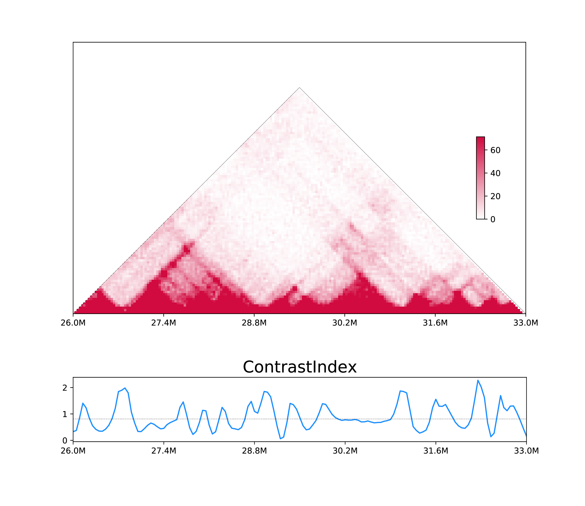

2. Calculate 1D metrics for one sample¶
2.1 Quick start¶
h1d one IS ./test_data/Control/observed.KR.chr21.matrix.gz \
50000 chr21 -o Control_IS_chr21
This command would generate a bedGraph file (Control_IS_chr21.bedGraph) for Insulation Score:
| ... | ... | ... | |
|---|---|---|---|
| chr21 | 24300000 | 24350000 | 0.59419 |
| chr21 | 24350000 | 24400000 | 0.604341 |
| ... | ... | ... |
2.2 Usage¶
The analysis of one-sample metrics cound be run by h1d one sub-command :
$ h1d one -h # type -h for help
usage: __main__.py one [-h] [-p PARAMETER] [-o OUTNAME] [-d] [--start START]
[--end END] [--datatype DATATYPE] [--gt GT] [--allchr]
type matrix resolution chromosome
1D metrics designed for one Hi-C sample.
positional arguments:
type Type of 1D metrics,,should be one of
{IS,CI,DI,SS,DLR,PC1,IES,IAS,IF}.
matrix Path of matrix or rawhic file.
resolution Resolution of input matrix.
chromosome Chromosome number.
optional arguments:
-h, --help show this help message and exit
-p PARAMETER, --parameter PARAMETER
Parameter for indicated metrics.
-o OUTNAME, --outname OUTNAME
output name (default: 'metrics').
-d, --draw Plot figure for candidate region.
--start START Start sites for plotting.
--end END End sites for plotting.
--datatype DATATYPE Type of input data: matrix(default) or rawhic.
--gt GT genome_table file.
--allchr Calculate metrics for multiple chromosomes.
type: type of 1D metrics could be one of {IS,CI,DI,SS,DLR,PC1,IES,IAS,IF}:Directional Index (DI) (PMID: 22495300)
Insulation Score (IS) (PMID: 26030525)
Contrast Index (CI) (PMID: 24981874)
TAD separation score (SS) (PMID: 26431028)
Distal-to-Local Ratio (DLR) (PMID: 30146161)
Compartment PC1 (PC1) (PMID: 19815776)
IntraTADscore (IAS) (Original metric)
InterTADscore (IES) (Original metric)
Interaction Frequency (IF)(Original metric)
Details is shown in our paper: link in the future
-p, --parameterfor each 1D metric is :
| Type | Description | default value |
|---|---|---|
| DI | length of | 1000000 |
| IS | square size | 300000 |
| CI | 300000 | |
| SS | 300000 | |
| DLR | ||
| PC1 | gene density file | None (The sign of eigenvector is arbitrary unless specify a geneDensity file) |
| IAS | ||
| IES | ||
| IF |
2.3 Calculate 1D metrics (one-sample)¶
Use contact matrix:
h1d one CI ./test_data/Control/observed.KR.chr21.matrix.gz \ 50000 chr21 -p 300000 -o control_CI_chr21 --datatype matrix
Use raw
.hicfile:h1d one CI ./test_data/Control/inter_30.hic \ 50000 chr21 -p 300000 -o control_CI_chr21 --datatype rawhic \ --gt ./reference/genome_table
Output will be
control_CI_chr21.bedGraphas described before.
Multiprocessing for all chromomes:¶
chromosome, set chromosome to “all” will compute metrics for all chromosomes.data, if calculating for all chromosomes, the input file should be absolute folder of contact matrix.-maxchr, Maximum index of chromosome (human genome is 22,i.e.). It will compute chromosome 1~maxchr plus chromosome X.--prefix, the prefix of matrix file, please modify the name of zipped matrix to${prefix}chr1.matrix.gz. If you used our dump function, the file should be:├── observed.KR.chr1.matrix.gz ├── observed.KR.chr10.matrix.gz ├── observed.KR.chr11.matrix.gz ├── observed.KR.chr12.matrix.gz ├── observed.KR.chr13.matrix.gz ├── observed.KR.chr14.matrix.gz
so the prefix is
observed.KR.-n, Number of processors
To run all chromosomes parallel, do:
h1d one IS ./test/Control/ 50000 all
--maxchr 22 --prefix observed.KR. -n 30 -o control
Output would be control_IS_allchr.csv.
2.4 Visulize 1D metrics (one-sample)¶
Use contact matrix:
h1d one CI ./test_data/Control/observed.KR.chr21.matrix.gz \ 50000 chr21 -p 300000 -o Control_CI_chr21 --datatype matrix \ --draw -s 26000000 -e 33000000
Use raw matrix:
h1d one CI ./test_data/Control/inter_30.hic \ 50000 chr21 -p 300000 -o Control_CI_chr21 --datatype rawhic \ --gt ./reference/genome_table --draw -s 26000000 -e 33000000
The output will be control_CI_chr21.bedGraph and control_CI_chr21.pdf:
